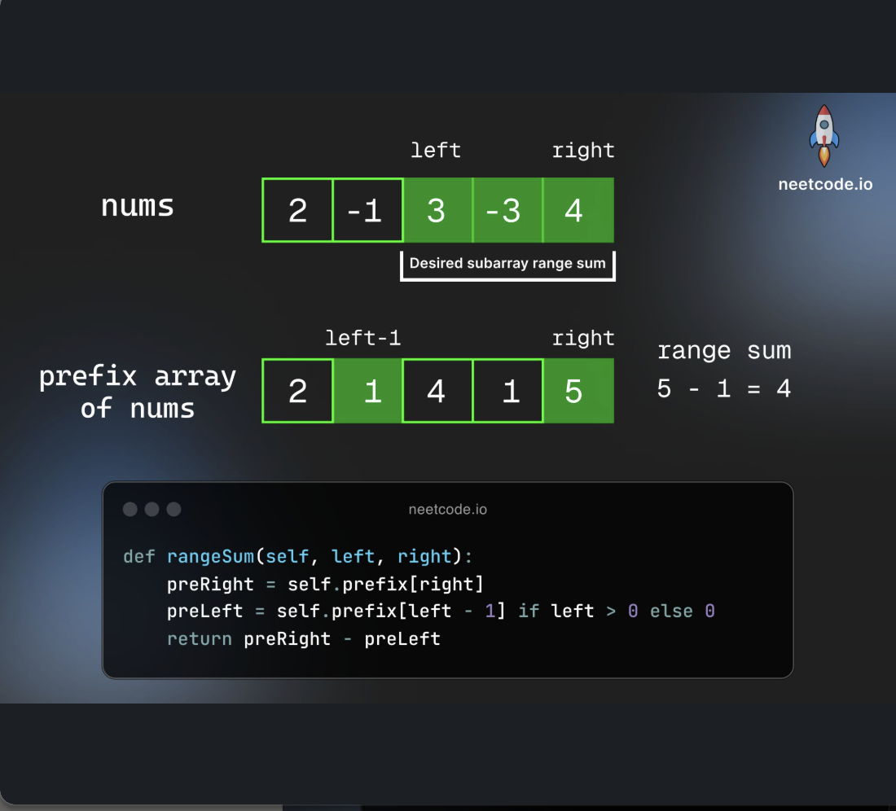
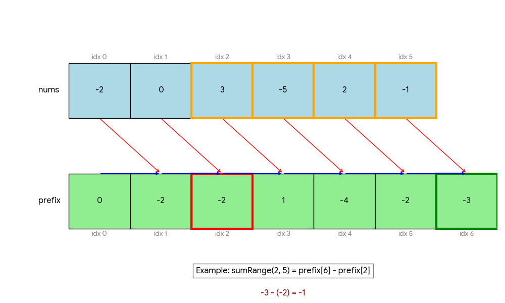

Prefix Sum
Last updated: Apr 19, 2026Table of Contents
- Overview
- Key Properties
- References
- Problem Categories
- Pattern 1: Basic Range Sum
- Pattern 2: Subarray Sum Equals Target
- Pattern 3: Subarray with Divisibility/Modulo
- Pattern 4: Range Addition/Difference Array
- Pattern 5: 2D Prefix Sum
- Pattern 6: Transform and Count
- Pattern 7: Sum of Distances (Left-Right Split)
- 0) Concept
- Why sum(l, r) = prefix[r+1] - prefix[l]
- Concrete Example (LC 303)
- Two Styles Comparison
- Templates & Algorithms
- Template Comparison Table
- Universal Template
- Template 1: Basic Prefix Sum (Range Queries)
- Template 2: HashMap + Prefix Sum (Subarray Target Sum)
- Template 3: Modulo Prefix Sum (Divisibility Problems)
- Template 4: Difference Array (Range Updates)
- Template 5: 2D Prefix Sum
- Template 6: Transform and Count
- Template 7: Sum of Distances (Left-Right Split)
- Problems by Pattern
- Pattern-Based Problem Classification
- Additional Practice Problems
- Pattern Selection Strategy
- Decision Framework for Prefix Sum Problems
- Template Selection Guide
- Problem Identification Patterns
- Legacy Examples
- 1) General form
- 1-1) Basic OP
- 2) LC Example
- 2-1) Flip String to Monotone Increasing
- 2-2) Range Addition
- 2-3) Count Number of Nice Subarrays
- 2-4) Maximum Size Subarray Sum Equals k
- 2-5) Subarray Sum Equals K
- 2-6) Continuous Subarray Sum
- 2-7) Max Chunks To Make Sorted
- 2-8) Maximum Sum of Two Non-Overlapping Subarrays
- 2-9) Maximum Side Length of a Square with Sum ≤ Threshold (LC 1292)
- 2-11) Sum of Distances (Pattern 7)
- Summary & Quick Reference
- Complexity Quick Reference
- Template Quick Reference
- Core Mathematical Insights
- Common Patterns & Tricks
- Problem-Solving Steps
- Common Mistakes & Tips
- Interview Tips
- Related Topics
- Advanced Extensions
Prefix Sum (前缀和)

Overview
Prefix Sum is a preprocessing technique that allows us to compute the sum of any subarray in O(1) time after O(n) preprocessing. The core idea is to precompute cumulative sums from the beginning of the array to each position.
Key Properties
- Time Complexity:
- Preprocessing: O(n)
- Query subarray sum: O(1)
- Overall: O(n) preprocessing + O(1) per query
- Space Complexity: O(n) for storing prefix sums
- Core Idea:
prefixSum[i] = nums[0] + nums[1] + ... + nums[i-1] - Subarray Sum:
sum(i, j) = prefixSum[j+1] - prefixSum[i] - When to Use:
- Multiple range sum queries
- Subarray problems with conditions
- Converting O(n²) to O(n) with HashMap
- 2D range sum queries
References
- Fucking Algorithm - Prefix Sum
- LeetCode Prefix Sum Problems
- LeetCode Problem Set Discussion
- Hash Map Cheatsheet
Problem Categories
Pattern 1: Basic Range Sum
- Description: Calculate sum of elements in any given range [i, j]
- Examples: LC 303 - Range Sum Query, LC 304 - Range Sum Query 2D
- Pattern: Direct application of prefix sum formula
- Key Insight:
sum[i:j] = prefixSum[j+1] - prefixSum[i]
Pattern 2: Subarray Sum Equals Target
- Description: Find/count subarrays with sum equal to target value
- Examples: LC 560 - Subarray Sum Equals K, LC 325 - Maximum Size Subarray Sum Equals k
- Pattern: Use HashMap to store prefix sums and check if
(current_sum - target)exists - Key Insight: If
prefixSum[j] - prefixSum[i] = k, thenprefixSum[i] = prefixSum[j] - k
Pattern 3: Subarray with Divisibility/Modulo
- Description: Problems involving divisibility, remainders, or modulo operations
- Examples: LC 523 - Continuous Subarray Sum, LC 974 - Subarray Sums Divisible by K
- Pattern: Store remainders instead of actual sums in HashMap
- Key Insight: If
(prefixSum[j] - prefixSum[i]) % k = 0, thenprefixSum[j] % k = prefixSum[i] % k
Pattern 4: Range Addition/Difference Array
- Description: Efficiently apply range updates to arrays
- Examples: LC 370 - Range Addition, LC 1094 - Car Pooling
- Pattern: Use difference array technique with prefix sum
- Key Insight: Add at start, subtract at end+1, then compute prefix sum
Pattern 5: 2D Prefix Sum
- Description: Calculate sum of any rectangular region in 2D matrix
- Examples: LC 304 - Range Sum Query 2D, LC 1314 - Matrix Block Sum
- Pattern: Build 2D prefix sum matrix, use inclusion-exclusion principle
- Key Insight:
sum = total - left - top + topleft
Pattern 6: Transform and Count
- Description: Transform array elements and use prefix sum for counting
- Examples: LC 1248 - Count Nice Subarrays, LC 926 - Flip String to Monotone
- Pattern: Convert elements to 0/1, then apply prefix sum with conditions
- Key Insight: Transform problem to simpler prefix sum problem
Pattern 7: Sum of Distances (Left-Right Split)
- Description: Calculate sum of absolute differences between indices efficiently
- Examples: LC 2615 - Sum of Distances, LC 2121 - Intervals Between Identical Elements, LC 1685 - Sum of Absolute Differences
- Pattern: Split into left/right parts, use
count * value - sumformula - Key Insight: For index
i, distance =(i * countLeft - sumLeft) + (sumRight - i * countRight)
0) Concept
Why sum(l, r) = prefix[r+1] - prefix[l]

1Given nums: [ a, b, c, d, e ]
2Index: 0 1 2 3 4
3
4Build prefix array (size n+1, prefix[0] = 0):
5
6prefix[0] = 0
7prefix[1] = a
8prefix[2] = a + b
9prefix[3] = a + b + c
10prefix[4] = a + b + c + d
11prefix[5] = a + b + c + d + e
12
13Visual:
14
15prefix: 0 | a | a+b | a+b+c | a+b+c+d | a+b+c+d+e |
16index: 0 1 2 3 4 5
17
18To get sum(l=1, r=3) = nums[1] + nums[2] + nums[3] = b + c + d:
19
20prefix[r+1] = prefix[4] = a + b + c + d
21prefix[l] = prefix[1] = a
22 ─────────────
23prefix[4] - prefix[1] = b + c + d ✓
24
25Visually (what gets cancelled out):
26
27prefix[4]: [ a | b | c | d ]
28prefix[1]: [ a ]
29 ─────────────────
30difference: [ b | c | d ] ← this is sum(1, 3)
Why size n+1? The extra prefix[0] = 0 handles the edge case when l = 0:
1sum(0, 2) = prefix[3] - prefix[0]
2 = (a + b + c) - 0
3 = a + b + c ✓
Without it, we’d need special if (left == 0) checks (see V0 in LC 303).
Concrete Example (LC 303)
1nums = [-2, 0, 3, -5, 2, -1]
2
3Step 1: Build prefix array
4prefix = [0, -2, -2, 1, -4, -2, -3]
5 ↑ ↑ ↑ ↑ ↑ ↑
6 -2 -2+0 ... sum of all
7
8Step 2: Query
9sumRange(0, 2) = prefix[3] - prefix[0] = 1 - 0 = 1 ✓ (-2+0+3)
10sumRange(2, 5) = prefix[6] - prefix[2] = -3 - (-2) = -1 ✓ (3-5+2-1)
11sumRange(0, 5) = prefix[6] - prefix[0] = -3 - 0 = -3 ✓ (-2+0+3-5+2-1)
Two Styles Comparison
| Style | Prefix Size | Build | Query sum(l, r) |
Edge Case |
|---|---|---|---|---|
Size n+1 (recommended) |
n + 1 |
prefix[i+1] = prefix[i] + nums[i] |
prefix[r+1] - prefix[l] |
No special case needed |
Size n |
n |
prefix[i] = prefix[i-1] + nums[i] |
prefix[r] - (l > 0 ? prefix[l-1] : 0) |
Need if (l == 0) check |
Templates & Algorithms
Template Comparison Table
| Template Type | Use Case | Key Data Structure | When to Use |
|---|---|---|---|
| Basic Prefix Sum | Range sum queries | Array | Need multiple range sum calculations |
| HashMap + Prefix Sum | Subarray with target sum | HashMap | Find/count subarrays with specific sum |
| Modulo Prefix Sum | Divisibility problems | HashMap with remainders | Subarray sum divisible by k |
| Difference Array | Range updates | Array with start/end markers | Multiple range additions |
| 2D Prefix Sum | Rectangle sum queries | 2D matrix | 2D range sum calculations |
| Sum of Distances | Absolute difference sums | HashMap + Prefix Sum | Sum of |
Universal Template
1def prefix_sum_solve(nums, target):
2 """
3 Universal prefix sum template for most problems
4 """
5 # Step 1: Initialize prefix sum and result
6 prefix_sum = 0
7 result = 0
8
9 # Step 2: HashMap for storing prefix sums (if needed)
10 prefix_map = {0: 1} # Handle subarrays starting from index 0
11
12 # Step 3: Iterate through array
13 for num in nums:
14 # Update prefix sum
15 prefix_sum += num
16
17 # Check condition based on problem type
18 if prefix_sum - target in prefix_map:
19 result += prefix_map[prefix_sum - target]
20
21 # Update map
22 prefix_map[prefix_sum] = prefix_map.get(prefix_sum, 0) + 1
23
24 return result
Template 1: Basic Prefix Sum (Range Queries)
1class PrefixSum:
2 def __init__(self, nums):
3 """Build prefix sum array for range queries"""
4 self.prefix = [0] * (len(nums) + 1)
5 for i in range(len(nums)):
6 self.prefix[i + 1] = self.prefix[i] + nums[i]
7
8 def range_sum(self, left, right):
9 """Get sum of elements from index left to right (inclusive)"""
10 return self.prefix[right + 1] - self.prefix[left]
1// Java implementation
2class PrefixSum {
3 private int[] prefix;
4
5 public PrefixSum(int[] nums) {
6 prefix = new int[nums.length + 1];
7 for (int i = 0; i < nums.length; i++) {
8 prefix[i + 1] = prefix[i] + nums[i];
9 }
10 }
11
12 public int rangeSum(int left, int right) {
13 return prefix[right + 1] - prefix[left];
14 }
15}
Template 2: HashMap + Prefix Sum (Subarray Target Sum)
1def subarray_sum_equals_k(nums, k):
2 """Count subarrays with sum equal to k"""
3 count = 0
4 prefix_sum = 0
5 prefix_map = {0: 1} # Important: initialize with {0: 1}
6
7 for num in nums:
8 prefix_sum += num
9
10 # Check if (prefix_sum - k) exists
11 if prefix_sum - k in prefix_map:
12 count += prefix_map[prefix_sum - k]
13
14 # Update map
15 prefix_map[prefix_sum] = prefix_map.get(prefix_sum, 0) + 1
16
17 return count
1// Java implementation
2public int subarraySum(int[] nums, int k) {
3 int count = 0, prefixSum = 0;
4 Map<Integer, Integer> map = new HashMap<>();
5 map.put(0, 1); // Handle subarrays starting from index 0
6
7 for (int num : nums) {
8 prefixSum += num;
9
10 if (map.containsKey(prefixSum - k)) {
11 count += map.get(prefixSum - k);
12 }
13
14 map.put(prefixSum, map.getOrDefault(prefixSum, 0) + 1);
15 }
16
17 return count;
18}
Template 3: Modulo Prefix Sum (Divisibility Problems)
1def subarray_divisible_by_k(nums, k):
2 """Count subarrays with sum divisible by k"""
3 count = 0
4 prefix_sum = 0
5 remainder_map = {0: 1} # remainder -> count
6
7 for num in nums:
8 prefix_sum += num
9 remainder = prefix_sum % k
10
11 # Handle negative remainders
12 if remainder < 0:
13 remainder += k
14
15 if remainder in remainder_map:
16 count += remainder_map[remainder]
17
18 remainder_map[remainder] = remainder_map.get(remainder, 0) + 1
19
20 return count
Template 4: Difference Array (Range Updates)
1def range_addition(length, updates):
2 """Apply multiple range additions efficiently"""
3 # Step 1: Create difference array
4 diff = [0] * (length + 1)
5
6 # Step 2: Apply range updates to difference array
7 for start, end, val in updates:
8 diff[start] += val
9 diff[end + 1] -= val
10
11 # Step 3: Compute prefix sum to get final result
12 result = []
13 current_sum = 0
14 for i in range(length):
15 current_sum += diff[i]
16 result.append(current_sum)
17
18 return result
Template 5: 2D Prefix Sum
1class NumMatrix:
2 def __init__(self, matrix):
3 """Build 2D prefix sum matrix"""
4 if not matrix or not matrix[0]:
5 return
6
7 m, n = len(matrix), len(matrix[0])
8 self.prefix = [[0] * (n + 1) for _ in range(m + 1)]
9
10 for i in range(1, m + 1):
11 for j in range(1, n + 1):
12 self.prefix[i][j] = (matrix[i-1][j-1] +
13 self.prefix[i-1][j] +
14 self.prefix[i][j-1] -
15 self.prefix[i-1][j-1])
16
17 def sumRegion(self, row1, col1, row2, col2):
18 """Calculate sum of rectangle from (row1,col1) to (row2,col2)"""
19 return (self.prefix[row2+1][col2+1] -
20 self.prefix[row1][col2+1] -
21 self.prefix[row2+1][col1] +
22 self.prefix[row1][col1])
Template 6: Transform and Count
1def count_nice_subarrays(nums, k):
2 """Count subarrays with exactly k odd numbers"""
3 # Transform: odd -> 1, even -> 0
4 transformed = [1 if x % 2 == 1 else 0 for x in nums]
5
6 # Now it's subarray sum equals k problem
7 count = 0
8 prefix_sum = 0
9 prefix_map = {0: 1}
10
11 for val in transformed:
12 prefix_sum += val
13
14 if prefix_sum - k in prefix_map:
15 count += prefix_map[prefix_sum - k]
16
17 prefix_map[prefix_sum] = prefix_map.get(prefix_sum, 0) + 1
18
19 return count
Template 7: Sum of Distances (Left-Right Split)
This pattern efficiently calculates sum of absolute differences |i - j| between indices.
Core Idea
For a sorted list of indices [i0, i1, i2, ..., ik], to find sum of distances from ij to all others:
1Instead of: |ij - i0| + |ij - i1| + ... + |ij - ik| (O(n) per element)
2
3Split into:
4 - Left part: (ij - i0) + (ij - i1) + ... = ij * countLeft - sumLeft
5 - Right part: (ij+1 - ij) + (ij+2 - ij) + ... = sumRight - ij * countRight
6
7Total: (ij * countLeft - sumLeft) + (sumRight - ij * countRight)
Visual Explanation
1Indices with same value: [2, 5, 8, 12]
2 ↑ ↑ ↑ ↑
3For index 8 (position 2 in list):
4
5 Left indices: [2, 5]
6 countLeft = 2
7 sumLeft = 2 + 5 = 7
8 distanceLeft = 8 * 2 - 7 = 9 → |8-2| + |8-5| = 6 + 3 = 9 ✓
9
10 Right indices: [12]
11 countRight = 1
12 sumRight = 12
13 distanceRight = 12 - 8 * 1 = 4 → |12-8| = 4 ✓
14
15 Total distance for index 8: 9 + 4 = 13
Python Template
1def sum_of_distances(nums):
2 """
3 LC 2615: Calculate sum of |i - j| for all j where nums[j] == nums[i]
4 Time: O(n), Space: O(n)
5 """
6 from collections import defaultdict
7
8 n = len(nums)
9 result = [0] * n
10
11 # Step 1: Group indices by value
12 index_map = defaultdict(list)
13 for i, num in enumerate(nums):
14 index_map[num].append(i)
15
16 # Step 2: For each group, calculate distances using prefix sum
17 for indices in index_map.values():
18 m = len(indices)
19 if m == 1:
20 continue # Single element has distance 0
21
22 # Build prefix sum of indices
23 prefix = [0] * m
24 prefix[0] = indices[0]
25 for i in range(1, m):
26 prefix[i] = prefix[i - 1] + indices[i]
27
28 total_sum = prefix[m - 1]
29
30 # Calculate distance for each index in group
31 for i in range(m):
32 idx = indices[i]
33
34 # Left part: idx * countLeft - sumLeft
35 count_left = i
36 sum_left = prefix[i - 1] if i > 0 else 0
37 left_dist = idx * count_left - sum_left
38
39 # Right part: sumRight - idx * countRight
40 count_right = m - i - 1
41 sum_right = total_sum - prefix[i]
42 right_dist = sum_right - idx * count_right
43
44 result[idx] = left_dist + right_dist
45
46 return result
Java Template
1// LC 2615 - Sum of Distances
2public long[] distance(int[] nums) {
3 int n = nums.length;
4 long[] res = new long[n];
5 Map<Integer, List<Integer>> map = new HashMap<>();
6
7 // Step 1: Group indices by value
8 for (int i = 0; i < n; i++) {
9 map.computeIfAbsent(nums[i], k -> new ArrayList<>()).add(i);
10 }
11
12 // Step 2: Calculate distances using prefix sum
13 for (List<Integer> indices : map.values()) {
14 int m = indices.size();
15 if (m == 1) continue;
16
17 // Build prefix sum
18 long[] prefix = new long[m];
19 prefix[0] = indices.get(0);
20 for (int i = 1; i < m; i++) {
21 prefix[i] = prefix[i - 1] + indices.get(i);
22 }
23
24 // Calculate distance for each index
25 for (int i = 0; i < m; i++) {
26 int idx = indices.get(i);
27
28 // Left: idx * countLeft - sumLeft
29 long left = (long) idx * i - (i == 0 ? 0 : prefix[i - 1]);
30
31 // Right: sumRight - idx * countRight
32 long right = (prefix[m - 1] - prefix[i]) - (long) idx * (m - i - 1);
33
34 res[idx] = left + right;
35 }
36 }
37
38 return res;
39}
Alternative: Running Sum Approach (No Prefix Array)
1def sum_of_distances_optimized(nums):
2 """Space-optimized version using running sums"""
3 from collections import defaultdict
4
5 n = len(nums)
6 result = [0] * n
7 index_map = defaultdict(list)
8
9 for i, num in enumerate(nums):
10 index_map[num].append(i)
11
12 for indices in index_map.values():
13 m = len(indices)
14 if m == 1:
15 continue
16
17 # Calculate total sum once
18 total_sum = sum(indices)
19
20 prefix_sum = 0
21 for i, idx in enumerate(indices):
22 # Left: idx * i - prefix_sum
23 # Right: (total_sum - prefix_sum - idx) - idx * (m - i - 1)
24 left_dist = idx * i - prefix_sum
25 right_dist = (total_sum - prefix_sum - idx) - idx * (m - i - 1)
26
27 result[idx] = left_dist + right_dist
28 prefix_sum += idx
29
30 return result
Formula Summary
| Component | Formula | Meaning |
|---|---|---|
| Left Distance | idx * countLeft - sumLeft |
Sum of (idx - smaller_idx) |
| Right Distance | sumRight - idx * countRight |
Sum of (larger_idx - idx) |
| Total Distance | leftDist + rightDist |
Sum of all |idx - other_idx| |
Problems by Pattern
Pattern-Based Problem Classification
Pattern 1: Basic Range Sum Problems
| Problem | LC # | Key Technique | Difficulty | Template |
|---|---|---|---|---|
| Range Sum Query - Immutable | 303 | Basic prefix sum array | Easy | Template 1 |
| Range Sum Query 2D - Immutable | 304 | 2D prefix sum | Medium | Template 5 |
| Product of Array Except Self | 238 | Left/right prefix products | Medium | Modified Template 1 |
| Running Sum of 1d Array | 1480 | Direct prefix sum | Easy | Template 1 |
| Find Pivot Index | 724 | Left sum vs right sum | Easy | Template 1 |
Pattern 2: Subarray Sum Equals Target Problems
| Problem | LC # | Key Technique | Difficulty | Template |
|---|---|---|---|---|
| Subarray Sum Equals K | 560 | HashMap + prefix sum | Medium | Template 2 |
| Maximum Size Subarray Sum Equals k | 325 | HashMap with indices | Medium | Template 2 |
| Subarray Sum Equals K II | 713 | Product version | Medium | Modified Template 2 |
| Binary Subarrays With Sum | 930 | Transform to sum equals | Medium | Template 6 |
| Number of Subarrays with Bounded Maximum | 795 | Range sum technique | Medium | Template 2 |
Pattern 3: Subarray with Divisibility/Modulo Problems
| Problem | LC # | Key Technique | Difficulty | Template |
|---|---|---|---|---|
| Subarray Sums Divisible by K | 974 | Modulo prefix sum | Medium | Template 3 |
| Continuous Subarray Sum | 523 | Modulo with length check | Medium | Template 3 |
| Make Sum Divisible by P | 1590 | Advanced modulo technique | Medium | Template 3 |
| Check If Array Pairs Are Divisible by k | 1497 | Frequency of remainders | Medium | Modified Template 3 |
Pattern 4: Range Addition/Updates Problems
| Problem | LC # | Key Technique | Difficulty | Template |
|---|---|---|---|---|
| Range Addition | 370 | Difference array | Medium | Template 4 |
| Car Pooling | 1094 | Timeline simulation | Medium | Template 4 |
| Corporate Flight Bookings | 1109 | Range updates | Medium | Template 4 |
| Maximum Population Year | 1854 | Event processing | Easy | Template 4 |
| Meeting Rooms II | 253 | Overlap counting | Medium | Template 4 |
Pattern 5: 2D Matrix Problems
| Problem | LC # | Key Technique | Difficulty | Template |
|---|---|---|---|---|
| Range Sum Query 2D | 304 | 2D prefix sum | Medium | Template 5 |
| Matrix Block Sum | 1314 | 2D range queries | Medium | Template 5 |
| Number of Submatrices That Sum to Target | 1074 | 2D + HashMap | Hard | Template 5 + 2 |
| Maximum Side Length Square | 1292 | Binary search + 2D prefix | Medium | Template 5 |
Pattern 6: Transform and Count Problems
| Problem | LC # | Key Technique | Difficulty | Template |
|---|---|---|---|---|
| Count Number of Nice Subarrays | 1248 | Transform odd/even | Medium | Template 6 |
| Flip String to Monotone Increasing | 926 | Transform 0/1 counting | Medium | Template 6 |
| Max Chunks To Make Sorted | 769 | Sum comparison | Medium | Template 6 |
| Longest Arithmetic Subsequence | 1027 | Transform differences | Medium | Template 6 |
Pattern 7: Sum of Distances Problems
| Problem | LC # | Key Technique | Difficulty | Template |
|---|---|---|---|---|
| Sum of Distances | 2615 | Group + left-right split | Medium | Template 7 |
| Intervals Between Identical Elements | 2121 | Same pattern, intervals | Medium | Template 7 |
| Sum of Absolute Differences in a Sorted Array | 1685 | Sorted array variant | Medium | Template 7 |
| Sum of Distances in Tree | 834 | Tree version (DFS + reroot) | Hard | Template 7 + DFS |
| Minimum Total Distance Traveled | 2463 | DP + distance calculation | Hard | Template 7 + DP |
Advanced/Mixed Pattern Problems
| Problem | LC # | Key Technique | Difficulty | Template |
|---|---|---|---|---|
| Maximum Sum of Two Non-Overlapping Subarrays | 1031 | Multiple prefix arrays | Medium | Template 1 + DP |
| Subarrays with K Different Integers | 992 | At most K technique | Hard | Template 2 |
| Minimum Window Subsequence | 727 | Sliding window + prefix | Hard | Template 2 + SW |
| Split Array With Same Average | 805 | Subset sum problem | Hard | Template 2 |
| Largest Rectangle in Histogram | 84 | Stack + prefix sum | Hard | Template 1 + Stack |
Additional Practice Problems
Easy Problems (Foundation Building)
| Problem | LC # | Focus Area | Template |
|---|---|---|---|
| Two Sum | 1 | HashMap fundamentals | Modified Template 2 |
| Contains Duplicate II | 219 | Sliding window + map | Template 2 |
| Maximum Average Subarray I | 643 | Fixed size subarray | Template 1 |
| Degree of an Array | 697 | Element frequency | Template 2 |
Medium Problems (Core Patterns)
| Problem | LC # | Focus Area | Template |
|---|---|---|---|
| Contiguous Array | 525 | Balance 0s and 1s | Template 6 |
| Shortest Unsorted Continuous Subarray | 581 | Array analysis | Template 1 |
| Random Pick with Weight | 528 | Weighted random | Template 1 |
| Path Sum III | 437 | Tree + prefix sum | Template 2 |
Hard Problems (Advanced Techniques)
| Problem | LC # | Focus Area | Template |
|---|---|---|---|
| Count of Range Sum | 327 | Merge sort + prefix | Advanced |
| Reverse Pairs | 493 | Merge sort technique | Advanced |
| Create Maximum Number | 321 | Greedy + prefix | Advanced |
| Count Different Palindromic Subsequences | 730 | DP + prefix | Advanced |
Pattern Selection Strategy
Decision Framework for Prefix Sum Problems
1Problem Analysis Flowchart:
2
31. Need multiple range sum queries?
4 ├── YES → Use Template 1 (Basic Prefix Sum)
5 └── NO → Continue to 2
6
72. Looking for subarrays with specific sum/count?
8 ├── YES → Continue to 2a
9 └── NO → Continue to 3
10
11 2a. Exact sum target?
12 ├── YES → Use Template 2 (HashMap + Prefix Sum)
13 └── NO → Continue to 2b
14
15 2b. Divisibility or modulo involved?
16 ├── YES → Use Template 3 (Modulo Prefix Sum)
17 └── NO → Continue to 2c
18
19 2c. Count odd/even or binary transformation?
20 ├── YES → Use Template 6 (Transform and Count)
21 └── NO → Use Template 2
22
233. Multiple range updates needed?
24 ├── YES → Use Template 4 (Difference Array)
25 └── NO → Continue to 4
26
274. 2D matrix operations?
28 ├── YES → Use Template 5 (2D Prefix Sum)
29 └── NO → Continue to 5
30
315. Special cases:
32 ├── Product instead of sum → Modified Template 1
33 ├── Tree path sums → Template 2 + Tree traversal
34 ├── Sliding window + prefix → Combine templates
35 └── Advanced merge/sort → Custom approach
Template Selection Guide
| Problem Keywords | Recommended Template | Example Problems |
|---|---|---|
| “range sum”, “query” | Template 1 | LC 303, 304 |
| “subarray sum equals”, “count subarrays” | Template 2 | LC 560, 325 |
| “divisible by”, “remainder”, “modulo” | Template 3 | LC 974, 523 |
| “range addition”, “updates”, “intervals” | Template 4 | LC 370, 1094 |
| “2D”, “matrix”, “rectangle” | Template 5 | LC 304, 1314 |
| “odd numbers”, “binary”, “transform” | Template 6 | LC 1248, 926 |
| “sum of distances”, “absolute differences”, “identical elements” | Template 7 | LC 2615, 2121, 1685 |
Problem Identification Patterns
Identify Template 1 Usage:
- Problem mentions: “range sum query”, “immutable array”, “multiple queries”
- Input: Array + multiple (left, right) queries
- Output: Sum of elements in range [left, right]
Identify Template 2 Usage:
- Problem mentions: “subarray sum equals K”, “count subarrays”, “target sum”
- Key insight: Need to find pairs (i, j) where
prefixSum[j] - prefixSum[i] = target - HashMap stores:
{prefixSum: count}or{prefixSum: index}
Identify Template 3 Usage:
- Problem mentions: “divisible by K”, “remainder”, “modulo”, “continuous sum”
- Key insight:
(prefixSum[j] - prefixSum[i]) % k = 0means same remainders - HashMap stores:
{remainder: count}or{remainder: index}
Identify Template 4 Usage:
- Problem mentions: “range updates”, “add value to range”, “difference array”
- Multiple operations of type: “add val to indices [start, end]”
- Key insight: Mark start/end points, then compute prefix sum
Identify Template 5 Usage:
- Problem mentions: “2D matrix”, “rectangle sum”, “submatrix”
- Need sum of rectangle from (r1,c1) to (r2,c2)
- Formula:
total - left - top + topleft
Identify Template 6 Usage:
- Problem mentions: “count odd/even”, “binary conditions”, “transform array”
- First transform array (e.g., odd→1, even→0), then apply prefix sum
- Reduces to simpler prefix sum problem
Identify Template 7 Usage:
- Problem mentions: “sum of distances”, “absolute differences”, “identical elements”
- Need to calculate
sum of |i - j|for elements with same value - Key insight: Split into left/right parts, use
count * value - sumformula - HashMap stores:
{value: [list of indices]} - Time complexity reduces from O(n²) to O(n)
Legacy Examples
0-2-1) Get count of continuous sub array equals to K
1// java
2// LC 560
3
4// ..
5Map<Integer, Integer> map = new HashMap<>();
6
7// ..
8
9for (int num : nums) {
10 presum += num;
11
12 // Check if there's a prefix sum such that presum - k exists
13 // NOTE !!! below
14 if (map.containsKey(presum - k)) {
15 count += map.get(presum - k);
16 }
17
18 // Update the map with the current prefix sum
19 map.put(presum, map.getOrDefault(presum, 0) + 1);
20}
21
22// ..
23
0-2-2) get prefix with range addition
1// java
2
3// LC 1094
4
5// ...
6
7int[] prefixSum = new int[1001]; // the biggest array size given by problem
8
9// `init pre prefix sum`
10for (int[] t : trips) {
11
12 int amount = t[0];
13 int start = t[1];
14 int end = t[2];
15
16 /**
17 * NOTE !!!!
18 *
19 * via trick below, we can `efficiently` setup prefix sum
20 * per start, end index
21 *
22 * -> we ADD amount at start point (customer pickup up)
23 * -> we MINUS amount at `end point` (customer drop off)
24 *
25 * -> via above, we get the `adjusted` `init prefix sum`
26 * -> so all we need to do next is :
27 * -> loop over the `init prefix sum`
28 * -> and keep adding `previous to current val`
29 * -> e.g. prefixSum[i] = prefixSum[i-1] + prefixSum[i]
30 *
31 */
32 prefixSum[start] += amount;
33 prefixSum[end] -= amount;
34}
35
36// update `prefix sum` array
37for (int i = 1; i < prefixSum.length; i++) {
38 prefixSum[i] += prefixSum[i - 1];
39}
40
41
42// ...
1) General form
1-1) Basic OP
2) LC Example
2-1) Flip String to Monotone Increasing
1# LC 926. Flip String to Monotone Increasing
2# NOTE : there is also dp approaches
3# V0
4# IDEA : PREFIX SUM
5class Solution(object):
6 def minFlipsMonoIncr(self, S):
7 # get pre-fix sum
8 P = [0]
9 for x in S:
10 P.append(P[-1] + int(x))
11 # find min
12 res = float('inf')
13 for j in range(len(P)):
14 res = min(res, P[j] + len(S)-j-(P[-1]-P[j]))
15 return res
16
17# V1
18# IDEA : PREFIX SUM
19# https://leetcode.com/problems/flip-string-to-monotone-increasing/solution/
20class Solution(object):
21 def minFlipsMonoIncr(self, S):
22 # get pre-fix sum
23 P = [0]
24 for x in S:
25 P.append(P[-1] + int(x))
26 # return min
27 return min(P[j] + len(S)-j-(P[-1]-P[j])
28 for j in range(len(P)))
2-2) Range Addition
1# LC 370. Range Addition
2# V0
3# IDEA : double loop -> 2 single loops, prefix sum
4class Solution(object):
5 def getModifiedArray(self, length, updates):
6 # edge case
7 if not length:
8 return
9 if length and not updates:
10 return [0 for i in range(length)]
11 # init res
12 res = [0 for i in range(length)]
13 # get cumsum on start and end idx
14 # then go through res, adjust the sum
15 for _start, _end, val in updates:
16 res[_start] += val
17 if _end+1 < length:
18 res[_end+1] -= val
19
20 #print ("res = " + str(res))
21 cur = 0
22 for i in range(len(res)):
23 cur += res[i]
24 res[i] = cur
25 #print ("--> res = " + str(res))
26 return res
27
28# V0'
29# IDEA : double loop -> 2 single loops, prefix sum
30class Solution(object):
31 def getModifiedArray(self, length, updates):
32 # NOTE : we init res with (len+1)
33 res = [0] * (length + 1)
34 """
35 NOTE !!!
36
37 -> We split double loop into 2 single loops
38 -> Steps)
39 step 1) go through updates, add val to start and end idx in res
40 step 2) go through res, maintain an aggregated sum (sum) and add it to res[i]
41 e.g. res[i], sum = res[i] + sum, res[i] + sum
42 """
43 for start, end, val in updates:
44 res[start] += val
45 res[end+1] -= val
46
47 sum = 0
48 for i in range(0, length):
49 res[i], sum = res[i] + sum, res[i] + sum
50
51 # NOTE : we return res[0:-1]
52 return res[0:-1]
53
54# V0'
55# IDEA : double loop -> 2 single loops, prefix sum
56class Solution(object):
57 def getModifiedArray(self, length, updates):
58 ret = [0] * (length + 1)
59 for start, end, val in updates:
60 ret[start] += val
61 ret[end+1] -= val
62
63 sum = 0
64 for i in range(0, length):
65 ret[i], sum = ret[i] + sum, ret[i] + sum
66
67 return ret[0:-1]
2-3) Count Number of Nice Subarrays
1# 1248. Count Number of Nice Subarrays
2# NOTE : there are also array, window, deque.. approaches
3class Solution:
4 def numberOfSubarrays(self, nums, k):
5 d = collections.defaultdict(int)
6 """
7 definition of hash map (in this problem)
8
9 -> d[cum_sum] = number_of_cum_sum_till_now
10
11 -> so at beginning, cum_sum = 0, and its count = 1
12 -> so we init hash map via "d[0] = 1"
13 """
14 d[0] = 1
15 # init cum_sum
16 cum_sum = 0
17 res = 0
18 # go to each element
19 for i in nums:
20 ### NOTE : we need to check "if i % 2 == 1" first, so in the next logic, we can append val to result directly
21 if i % 2 == 1:
22 cum_sum += 1
23 """
24 NOTE !!! : trick here !!!
25 -> same as 2 sum ...
26 -> if cum_sum - x == k
27 -> x = cum_sum - k
28 -> so we need to check if "cum_sum - k" already in our hash map
29 """
30 if cum_sum - k in d:
31 ### NOTE !!! here : we need to use d[cum_sum - k], since this is # of sub string combination that with # of odd numbers == k
32 res += d[cum_sum - k]
33 ### NOTE !!! : we need to add 1 to count of "cum_sum", since in current loop, we got a new cur_sum (as above)
34 d[cum_sum] += 1
35 return res
2-4) Maximum Size Subarray Sum Equals k
1# LC 325. Maximum Size Subarray Sum Equals k
2# V0
3# time complexity : O(N) | space complexity : O(N)
4# IDEA : HASH TBALE
5# -> have a var acc keep sum of all item in nums,
6# -> and use dic collect acc and its index
7# -> since we want to find nums[i:j] = k -> so it's a 2 sum problem now
8# -> i.e. if acc - k in dic => there must be a solution (i,j) of nums[i:j] = k
9# -> return the max result
10# -> ### acc DEMO : given array a = [1,2,3,4,5] ###
11# -> acc_list = [1,3,6,10,15]
12# -> so sum(a[1:3]) = 9 = acc_list[3] - acc_list[1-1] = 10 - 1 = 9
13class Solution(object):
14 def maxSubArrayLen(self, nums, k):
15
16 result, acc = 0, 0
17 # NOTE !!! we init dic as {0:-1} ({sum:idx})
18 dic = {0: -1}
19
20 for i in range(len(nums)):
21 acc += nums[i]
22 if acc not in dic:
23 ### NOTE : we save idx as dict value
24 dic[acc] = i
25 ### acc - x = k -> so x = acc - k, that's why we check if acc - x in the dic or not
26 if acc - k in dic:
27 result = max(result, i - dic[acc-k])
28 return result
2-5) Subarray Sum Equals K
1// java
2// LC 560
3public int subarraySum(int[] nums, int k) {
4 /**
5 * NOTE !!!
6 *
7 * use Map to store prefix sum and its count
8 *
9 * map : {prefixSum: count}
10 *
11 *
12 * -> since "same preSum may have multiple combination" within hashMap,
13 * so it's needed to track preSum COUNT, instead of its index
14 */
15 Map<Integer, Integer> map = new HashMap<>();
16 int presum = 0;
17 int count = 0;
18
19 /**
20 * NOTE !!!
21 *
22 * Initialize the map with prefix sum 0 (to handle subarrays starting at index 0)
23 */
24 map.put(0, 1);
25
26 for (int num : nums) {
27 presum += num;
28
29 // Check if there's a prefix sum such that presum - k exists
30 if (map.containsKey(presum - k)) {
31 count += map.get(presum - k);
32 }
33
34 // Update the map with the current prefix sum
35 map.put(presum, map.getOrDefault(presum, 0) + 1);
36 }
37
38 return count;
39}
2-6) Continuous Subarray Sum
1// java
2// LC 523
3// V1
4// IDEA : HASHMAP
5// https://leetcode.com/problems/continuous-subarray-sum/editorial/
6// https://github.com/yennanliu/CS_basics/blob/master/doc/pic/presum_mod.png
7public boolean checkSubarraySum_1(int[] nums, int k) {
8 int prefixMod = 0;
9 HashMap<Integer, Integer> modSeen = new HashMap<>();
10 modSeen.put(0, -1);
11
12 for (int i = 0; i < nums.length; i++) {
13 /**
14 * NOTE !!! we get `mod of prefixSum`, instead of get prefixSum
15 */
16 prefixMod = (prefixMod + nums[i]) % k;
17
18 if (modSeen.containsKey(prefixMod)) {
19 // ensures that the size of subarray is at least 2
20 if (i - modSeen.get(prefixMod) > 1) {
21 return true;
22 }
23 } else {
24 // mark the value of prefixMod with the current index.
25 modSeen.put(prefixMod, i);
26 }
27 }
28
29 return false;
30}
2-7) Max Chunks To Make Sorted
1// java
2// LC 769
3// V1-1
4// https://leetcode.com/problems/max-chunks-to-make-sorted/editorial/
5// IDEA: Prefix Sums
6/**
7 * IDEA:
8 *
9 * An important observation is that a segment of the
10 * array can form a valid chunk if, when sorted,
11 * it matches the corresponding segment
12 * in the fully sorted version of the array.
13 *
14 * Since the numbers in arr belong to the range [0, n - 1], we can simplify the problem by using the property of sums. Specifically, for any index, it suffices to check whether the sum of the elements in arr up to that index is equal to the sum of the elements in the corresponding prefix of the sorted array.
15 *
16 * If these sums are equal, it guarantees that the elements in the current segment of arr match the elements in the corresponding segment of the sorted array (possibly in a different order). When this condition is satisfied, we can form a new chunk — either starting from the beginning of the array or the end of the previous chunk.
17 *
18 * For example, consider arr = [1, 2, 0, 3, 4] and the sorted version sortedArr = [0, 1, 2, 3, 4]. We find the valid segments as follows:
19 *
20 * Segment [0, 0] is not valid, since sum = 1 and sortedSum = 0.
21 * Segment [0, 1] is not valid, since sum = 1 + 2 = 3 and sortedSum = 0 + 1 = 1.
22 * Segment [0, 2] is valid, since sum = 1 + 2 + 0 = 3 and sortedSum = 0 + 1 + 2 = 3.
23 * Segment [3, 3] is valid, because sum = 1 + 2 + 0 + 3 = 6 and sortedSum = 0 + 1 + 2 + 3 = 6.
24 * Segment [4, 4] is valid, because sum = 1 + 2 + 0 + 3 + 4 = 10 and sortedSum = 0 + 1 + 2 + 3 + 4 = 10.
25 * Therefore, the answer here is 3.
26 *
27 * Algorithm
28 * - Initialize n to the size of the arr array.
29 * - Initialize chunks, prefixSum, and sortedPrefixSum to 0.
30 * - Iterate over arr with i from 0 to n - 1:
31 * - Increment prefixSum by arr[i].
32 * - Increment sortedPrefixSum by i.
33 * - Check if prefixSum == sortedPrefixSum:
34 * - If so, increment chunks by 1.
35 * - Return chunks.
36 *
37 */
38public int maxChunksToSorted_1_1(int[] arr) {
39 int n = arr.length;
40 int chunks = 0, prefixSum = 0, sortedPrefixSum = 0;
41
42 // Iterate over the array
43 for (int i = 0; i < n; i++) {
44 // Update prefix sum of `arr`
45 prefixSum += arr[i];
46 // Update prefix sum of the sorted array
47 sortedPrefixSum += i;
48
49 // If the two sums are equal, the two prefixes contain the same elements; a chunk can be formed
50 if (prefixSum == sortedPrefixSum) {
51 chunks++;
52 }
53 }
54 return chunks;
55}
2-8) Maximum Sum of Two Non-Overlapping Subarrays
1// java
2// LC 1031
3
4// V1
5// https://leetcode.ca/2018-09-26-1031-Maximum-Sum-of-Two-Non-Overlapping-Subarrays/
6// IDEA: PREFIX SUM
7public int maxSumTwoNoOverlap_1(int[] nums, int firstLen, int secondLen) {
8 int n = nums.length;
9 int[] s = new int[n + 1];
10 for (int i = 0; i < n; ++i) {
11 s[i + 1] = s[i] + nums[i];
12 }
13 int ans = 0;
14 // case 1) check `firstLen`, then `secondLen`
15 for (int i = firstLen, t = 0; i + secondLen - 1 < n; ++i) {
16 t = Math.max(t, s[i] - s[i - firstLen]);
17 ans = Math.max(ans, t + s[i + secondLen] - s[i]);
18 }
19 // case 2) check `secondLen`, then `firstLen`
20 for (int i = secondLen, t = 0; i + firstLen - 1 < n; ++i) {
21 t = Math.max(t, s[i] - s[i - secondLen]);
22 ans = Math.max(ans, t + s[i + firstLen] - s[i]);
23 }
24 return ans;
25}
2-9) Maximum Side Length of a Square with Sum ≤ Threshold (LC 1292)
Pattern: 2D Prefix Sum + Binary Search or 2D Prefix Sum + Greedy
Core Idea:
- Build a 2D prefix sum table (size
(m+1) x (n+1)) so any square’s sum is computed in O(1). - Binary Search approach: Binary search on side length
[1, min(m,n)]. For each candidate lengthmid, scan all valid top-left corners and check if any square sum ≤ threshold. → O(m·n·log(min(m,n))) - Greedy approach: Single pass over all cells; at each cell
(i,j), only test if a square of sidemaxSide+1fits. If yes, incrementmaxSide. → O(m·n)
2D Prefix Sum formula (square ending at (i,j) with side k):
1sum = P[i][j] - P[i-k][j] - P[i][j-k] + P[i-k][j-k]
Binary Search approach (Java):
1// LC 1292 - V1 Binary Search
2public int maxSideLength(int[][] mat, int threshold) {
3 int m = mat.length, n = mat[0].length;
4 int[][] P = new int[m + 1][n + 1];
5 for (int i = 1; i <= m; i++)
6 for (int j = 1; j <= n; j++)
7 P[i][j] = mat[i-1][j-1] + P[i-1][j] + P[i][j-1] - P[i-1][j-1];
8
9 int l = 1, r = Math.min(m, n), ans = 0;
10 while (l <= r) {
11 int mid = (l + r) / 2;
12 boolean found = false;
13 outer:
14 for (int i = mid; i <= m; i++) {
15 for (int j = mid; j <= n; j++) {
16 int sum = P[i][j] - P[i-mid][j] - P[i][j-mid] + P[i-mid][j-mid];
17 if (sum <= threshold) { found = true; break outer; }
18 }
19 }
20 if (found) { ans = mid; l = mid + 1; }
21 else r = mid - 1;
22 }
23 return ans;
24}
Greedy approach (Java):
1// LC 1292 - V0 Greedy (O(m*n), optimal)
2public int maxSideLength(int[][] mat, int threshold) {
3 int m = mat.length, n = mat[0].length;
4 int[][] P = new int[m + 1][n + 1];
5 for (int i = 1; i <= m; i++)
6 for (int j = 1; j <= n; j++)
7 P[i][j] = mat[i-1][j-1] + P[i-1][j] + P[i][j-1] - P[i-1][j-1];
8
9 int maxSide = 0;
10 for (int i = 1; i <= m; i++) {
11 for (int j = 1; j <= n; j++) {
12 int k = maxSide + 1; // only try to improve by 1
13 if (i >= k && j >= k) {
14 int sum = P[i][j] - P[i-k][j] - P[i][j-k] + P[i-k][j-k];
15 if (sum <= threshold) maxSide++;
16 }
17 }
18 }
19 return maxSide;
20}
Why Greedy works: We only need to know the maximum achievable side length. Scanning left-to-right, top-to-bottom ensures we never miss a valid square — if a larger square exists somewhere, it will be discovered when we reach its bottom-right corner.
Similar LCs:
| Problem | LC # | Similarity |
|---|---|---|
| Range Sum Query 2D | 304 | Core 2D prefix sum template |
| Matrix Block Sum | 1314 | Fixed-radius 2D range query |
| Number of Submatrices That Sum to Target | 1074 | 2D prefix sum + count (harder) |
| Maximal Square | 221 | Max square in matrix (DP approach) |
| Largest 1-Bordered Square | 1139 | Max square with border condition |
2-11) Sum of Distances (Pattern 7)
1// java
2// LC 2615 - Sum of Distances
3// IDEA: HashMap + Prefix Sum (Left-Right Split)
4/**
5 * Core Formula:
6 * For index i in a group of identical elements:
7 * - leftDistance = i * countLeft - sumLeft
8 * - rightDistance = sumRight - i * countRight
9 * - totalDistance = leftDistance + rightDistance
10 *
11 * Why this works:
12 * |i - j| for all j < i = (i - j1) + (i - j2) + ...
13 * = i * count - (j1 + j2 + ...)
14 * = i * countLeft - sumLeft
15 */
16public long[] distance(int[] nums) {
17 int n = nums.length;
18 long[] res = new long[n];
19 Map<Integer, List<Integer>> map = new HashMap<>();
20
21 // Step 1: Group indices by value
22 for (int i = 0; i < n; i++) {
23 map.computeIfAbsent(nums[i], k -> new ArrayList<>()).add(i);
24 }
25
26 // Step 2: For each group, calculate distances using prefix sum
27 for (List<Integer> list : map.values()) {
28 int m = list.size();
29 if (m == 1) continue; // Single element has distance 0
30
31 // Build prefix sum of indices
32 long[] prefix = new long[m];
33 prefix[0] = list.get(0);
34 for (int i = 1; i < m; i++) {
35 prefix[i] = prefix[i - 1] + list.get(i);
36 }
37
38 // Calculate distance for each index in the group
39 for (int i = 0; i < m; i++) {
40 int idx = list.get(i);
41
42 // Left part: idx * countLeft - sumLeft
43 long left = (long) idx * i - (i == 0 ? 0 : prefix[i - 1]);
44
45 // Right part: sumRight - idx * countRight
46 long right = (prefix[m - 1] - prefix[i]) - (long) idx * (m - i - 1);
47
48 res[idx] = left + right;
49 }
50 }
51
52 return res;
53}
1# python
2# LC 2615 - Sum of Distances
3# V0: HashMap + Prefix Sum
4def distance(nums):
5 from collections import defaultdict
6
7 n = len(nums)
8 result = [0] * n
9 index_map = defaultdict(list)
10
11 # Group indices by value
12 for i, num in enumerate(nums):
13 index_map[num].append(i)
14
15 # Calculate distances for each group
16 for indices in index_map.values():
17 m = len(indices)
18 if m == 1:
19 continue
20
21 # Build prefix sum
22 prefix = [0] * m
23 prefix[0] = indices[0]
24 for i in range(1, m):
25 prefix[i] = prefix[i - 1] + indices[i]
26
27 total_sum = prefix[m - 1]
28
29 # Calculate distance using left-right split
30 for i in range(m):
31 idx = indices[i]
32
33 # Left: idx * countLeft - sumLeft
34 sum_left = prefix[i - 1] if i > 0 else 0
35 left_dist = idx * i - sum_left
36
37 # Right: sumRight - idx * countRight
38 sum_right = total_sum - prefix[i]
39 right_dist = sum_right - idx * (m - i - 1)
40
41 result[idx] = left_dist + right_dist
42
43 return result
Summary & Quick Reference
Complexity Quick Reference
| Operation | Time | Space | Notes |
|---|---|---|---|
| Build prefix sum array | O(n) | O(n) | One-time preprocessing |
| Range sum query | O(1) | O(1) | After preprocessing |
| Subarray sum with HashMap | O(n) | O(n) | Average case, O(n²) worst case |
| 2D prefix sum build | O(mn) | O(mn) | For m×n matrix |
| 2D range query | O(1) | O(1) | After preprocessing |
| Difference array updates | O(k) | O(n) | k updates, n array size |
Template Quick Reference
| Template | Pattern | Key Code Snippet |
|---|---|---|
| Template 1 | Basic Range Sum | prefix[i+1] = prefix[i] + nums[i] |
| Template 2 | HashMap + Target | if prefix_sum - k in map: count += map[prefix_sum - k] |
| Template 3 | Modulo/Divisibility | remainder = prefix_sum % k; if remainder in map... |
| Template 4 | Range Updates | diff[start] += val; diff[end+1] -= val |
| Template 5 | 2D Matrix | prefix[i][j] = val + left + top - topleft |
| Template 6 | Transform Count | transform array first, then apply prefix sum |
| Template 7 | Sum of Distances | left = idx * countLeft - sumLeft; right = sumRight - idx * countRight |
Core Mathematical Insights
Prefix Sum Formula
1# For 1D array: sum of subarray [i, j] (inclusive)
2subarray_sum = prefix[j + 1] - prefix[i]
3
4# For 2D matrix: sum of rectangle from (r1,c1) to (r2,c2)
5rectangle_sum = prefix[r2+1][c2+1] - prefix[r1][c2+1] - prefix[r2+1][c1] + prefix[r1][c1]
HashMap Key Insights
1# If prefix_sum[j] - prefix_sum[i] = k
2# Then prefix_sum[i] = prefix_sum[j] - k
3# So check if (current_prefix_sum - k) exists in map
4
5# For divisibility: if (sum[j] - sum[i]) % k = 0
6# Then sum[j] % k = sum[i] % k
7# So check if (current_sum % k) exists in remainder map
Common Patterns & Tricks
Pattern 1: Two Sum Extended
1# Convert "find subarray with sum = k" to "find two prefix sums with diff = k"
2def subarray_sum_equals_k(nums, k):
3 prefix_sum = 0
4 count = 0
5 prefix_map = {0: 1} # Critical: handle subarrays from index 0
6
7 for num in nums:
8 prefix_sum += num
9 count += prefix_map.get(prefix_sum - k, 0)
10 prefix_map[prefix_sum] = prefix_map.get(prefix_sum, 0) + 1
11
12 return count
Pattern 2: Difference Array Magic
1# Apply multiple range updates [start, end, val] efficiently
2def range_addition(length, updates):
3 diff = [0] * (length + 1) # Extra space for end+1 indexing
4
5 for start, end, val in updates:
6 diff[start] += val # Mark start
7 diff[end + 1] -= val # Mark end+1 (undo effect)
8
9 # Convert difference array to result using prefix sum
10 result = []
11 current = 0
12 for i in range(length):
13 current += diff[i] # This is prefix sum computation!
14 result.append(current)
15
16 return result
Pattern 3: Transform Before Sum
1# Many problems can be reduced to simpler prefix sum problems
2def count_nice_subarrays(nums, k):
3 # Transform: odd numbers → 1, even numbers → 0
4 # Problem becomes: count subarrays with sum = k
5 binary_array = [1 if x % 2 == 1 else 0 for x in nums]
6 return subarray_sum_equals_k(binary_array, k)
Problem-Solving Steps
-
Identify the Pattern
- Read problem carefully for keywords (range, subarray, sum, count, etc.)
- Check if multiple queries or single pass needed
- Look for mathematical relationships (divisibility, modulo, etc.)
-
Choose the Right Template
- Use decision flowchart to select appropriate template
- Consider time/space complexity requirements
- Check if transformation needed before applying prefix sum
-
Handle Edge Cases
- Empty arrays or single elements
- Negative numbers (especially for modulo operations)
- Integer overflow for large sums
- Zero values and their impact on divisibility
-
Optimize Implementation
- Initialize HashMap with base case (usually
{0: 1}) - Handle negative remainders in modulo operations
- Use one-pass algorithm when possible
- Consider space optimization if only counts needed
- Initialize HashMap with base case (usually
Common Mistakes & Tips
🚫 Common Mistakes:
- Forgetting base case: Not initializing HashMap with
{0: 1}for subarray problems - Off-by-one errors: Incorrect indexing in prefix sum arrays
- Negative remainders: Not handling
remainder < 0in modulo operations - HashMap timing: Adding to map before vs after checking condition
- 2D indexing: Confusing row/column indices in 2D prefix sum
- Range updates: Forgetting to subtract at
end+1in difference array
✅ Best Practices:
- Always initialize prefix sum arrays with size
n+1for 1-based indexing - Always add
{0: 1}to HashMap for subarray problems to handle edge cases - Double-check the order: check condition first, then update HashMap
- Handle negatives: Use
remainder = (remainder % k + k) % kfor modulo - Validate bounds: Check array bounds when using
end+1indexing - Test edge cases: Empty arrays, single elements, all negatives
Interview Tips
-
Pattern Recognition
- If you see “subarray sum equals K” → immediate HashMap + prefix sum
- If you see “range queries” → basic prefix sum array
- If you see “divisible by K” → modulo technique with HashMap
- If you see “multiple range updates” → difference array
-
Communication Strategy
- Explain the mathematical insight: “We’re looking for pairs of prefix sums”
- Draw examples showing how prefix sums work
- Mention time complexity improvement: “This reduces O(n²) to O(n)”
- Discuss space-time tradeoffs
-
Implementation Tips
- Start with brute force to verify understanding
- Then optimize using appropriate prefix sum template
- Explain why HashMap initialization matters
- Walk through a small example step by step
-
Follow-up Discussions
- Discuss variations: “What if we need maximum length instead of count?”
- Explain extension to 2D: “How would this work for matrices?”
- Consider constraints: “What if numbers are very large?” (overflow)
Related Topics
- HashMap/Hash Table: Essential for most advanced prefix sum problems
- Sliding Window: Can be combined with prefix sum for optimization
- Two Sum: Many prefix sum problems are extensions of two sum
- Dynamic Programming: Prefix sums often used as DP optimization
- Binary Search: Can be combined with prefix sum for range queries
- Segment Trees: Alternative for range sum with updates
- Monotonic Stack: Sometimes combined with prefix sum for optimization
Advanced Extensions
- Sparse Arrays: Use coordinate compression with prefix sum
- Online Queries: Segment trees or Fenwick trees for updates + queries
- 2D Range Updates: 2D difference arrays with 2D prefix sum
- Weighted Prefix Sum: Handle different weights for elements
- Circular Arrays: Modify templates to handle circular conditions
This comprehensive cheatsheet covers all major prefix sum patterns and provides systematic approaches for solving 40+ LeetCode problems efficiently.